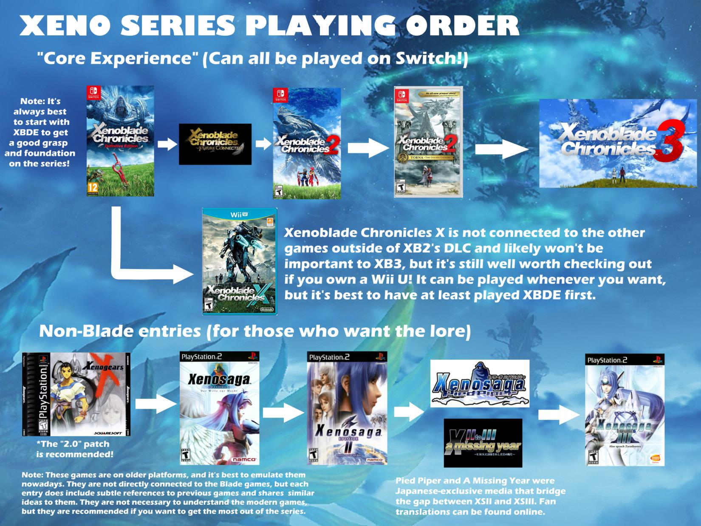

The Xeno games have been going on for over 2 decades now. Sadly, I never played Xenogears or Xenosaga even though I'm sure I would have enjoyed them as a kid. My first introduction to the series was with Xenoblade Chronicles. I didn't play the original Wii version though, I didn't know about the series until the re-release on 3DS (great machine btw). I was one of the 10 people in the world with a Wii U, so I also played Xenoblade Chronicles X. I remember it being polarizing at the time but people seem to look back at it fondly now. I played Xenoblade 2 and now I'm playing 3. Xenoblade Chronicles 3 may just be my favorite of the series so far. On this page I'm going to talk a little bit about each game and the series as a whole.

Credit to HexenVexen on Reddit for this image
Xenoblade Chronicles
It's been a long time since I've played the first game.
Xenoblade Chronicles X
Xenoblade X had an INCREDIBLE soundtrack, it's easily the best part of the game. The composer was Hiroyuki Sawano who did the music for...Attack on Titan! So you know the music in X is gonna be epic. It was really experimental. Kinda rap-rock at times, but overall it was vocal-heavy which I always like in an RPG. It was reminiscent of Persona in that aspect. The Xenoblade series is known for having giant monsters roaming the world that you can optionally fight. In X, they were called tyrants, and this is the theme that played whenever you fought one:
Try and tell me this song isn't amazing. You can't.
The rap-rock is on display in Black Tar, the regular battle theme. I think there were a couple valid issues people had. The regular fights ended far too quickly in X, and the sound mixing wasn't always the best. This led to people hearing the first 50 seconds of the song over and over again, which consisted of a guitar riff and often too-loud drums. That's the danger of a battle theme with vocals. When your fights end very fast, having a 6 minute battle song that starts over for every fight just doesn't work. It's too bad because I really like the song.
The different areas of the map also had unique soundtracks. Each had a specific theme and feel. For example, the jungle area had the jungle-iest song ever:
There's plenty more to say about X, it had a lot of good ideas but sometimes bad execution. Play it for the soundtrack, if anything.
Xenoblade Chronicles 2
Leaned too far into the anime tropes...and Rex is just the worst protagonist. Morag and Nia are great, though.
Xenoblade Chronicles 3
Xenoblade 3 fixed a lot of the issues I had with the earlier games. Xenoblade games struggle with pacing. One of the memes is that you still get new tutorials 80 hours in, which...is actually pretty accurate. There's a ton of systems that build upon each other, and sometimes this can cause the opening hours to drag on. I feel that X3 handled this perfectly. You're thrown straight into the war, the relevant world-building exposition is given during the opening cutscene, and you're thrown straight into the fray. The combat opens up fairly quickly, definitely at a much better pace than the earlier games.
I'm around 11 hours in but I can already say this is the best Xenoblade has ever been.